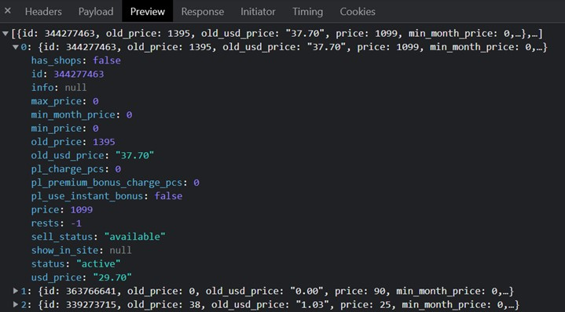

Описати масив об'єктів – сайтів розроблених компанією з такими властивостями:
Знайти:
Розробити функцію, у яку передають об'єкт (день, місяць, рік). Визначити, який буде рік через N місяців.
Приклад відповіді з одного з сайтів (масив об'єктів з інформацією про товари)
Знайти